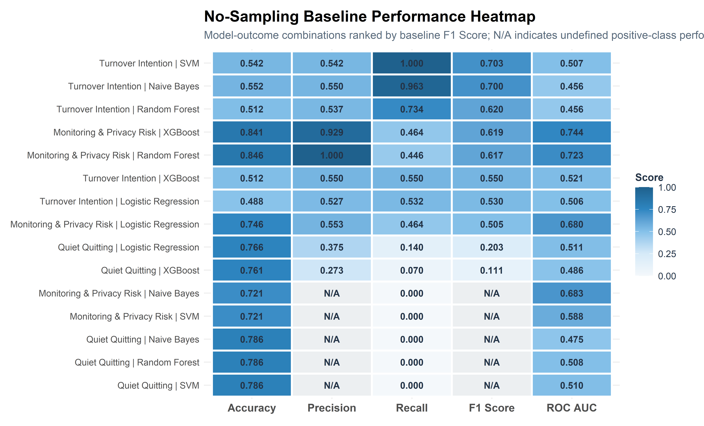
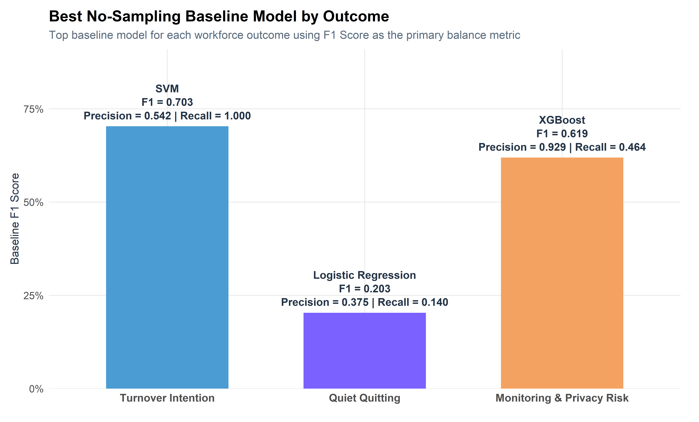
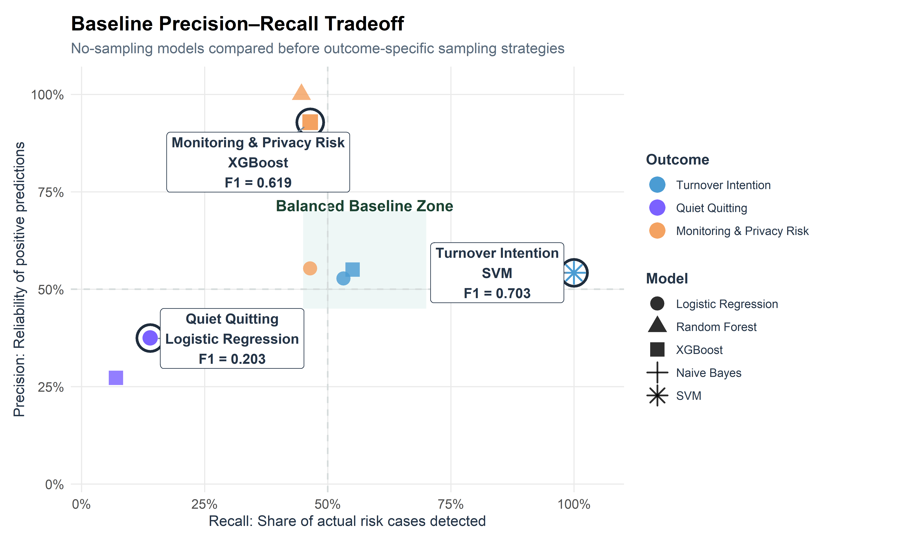

Predictive Modeling Baseline
This section establishes a no-sampling baseline across five supervised learning models and three workforce outcomes, creating a clear reference point before testing outcome-specific sampling strategies.
Executive Summary
This page establishes the baseline modeling layer for the HR workforce analytics portfolio.
Before testing sampling strategies such as up-sampling, down-sampling, or SMOTE, I first evaluated each workforce outcome under the same no-sampling condition. This gives the project a clear starting point and makes the later modeling pages easier to interpret.
The baseline comparison focuses on three workforce outcomes:
- Turnover Intention
- Quiet Quitting
- Monitoring & Privacy Risk
Each outcome is evaluated using the same five supervised learning models:
- Logistic Regression
- Random Forest
- XGBoost
- Naive Bayes
- Support Vector Machine
The goal of this page is not to select the final model for each outcome. Instead, it answers a practical question: before adjusting the data strategy, how well do the models perform on their own?
This baseline step helps separate model performance from sampling effects and provides a reference point for the outcome-specific reports that follow.
Why a Baseline Matters
A baseline model gives the analysis something to compare against.
Without a baseline, it would be difficult to know whether later sampling strategies actually improve model performance or simply change the way the model behaves. This matters because workforce-risk outcomes often involve uneven class distributions, moderate signal strength, and tradeoffs between detecting risk and avoiding false positives.
Baseline question: How well do the models perform before class balancing or outcome-specific sampling strategies are introduced?
For this project, the baseline is especially useful because it shows where the original data structure already supports prediction and where additional modeling strategy is needed.
For example, a model may produce acceptable accuracy while still failing to detect employees in the positive-risk class. That kind of result would not be useful for workforce decision support, even if the accuracy score looks reasonable.
Modeling Overview
This baseline analysis compares five supervised learning models across three workforce outcomes using a consistent modeling workflow.
For each outcome, the data is split into training and testing sets using stratified sampling. The same preprocessing approach is applied across models so that performance differences are easier to compare.
The workflow includes:
- Dummy encoding for categorical predictors
- Normalization for numeric predictors
- Removal of zero-variance predictors
- Consistent factor-level handling for each target variable
- No sampling or class balancing during baseline training
Only No Sampling is used on this page. The original class distribution is preserved so the baseline reflects how each model performs before additional intervention.
The outcome-specific pages that follow build from this starting point by testing whether sampling strategies improve precision, recall, F1 Score, or overall practical usefulness.
Data Preparation Framework
The cleaned dataset from the exploratory analysis is used as the modeling input.
Each target variable is converted into a two-level factor with “No” as the first level and “Yes” as the positive event class. This keeps evaluation consistent across all three outcomes and ensures that precision, recall, F1 Score, and ROC AUC are interpreted the same way throughout the project.
This step is important because the positive class represents the workforce-risk condition of interest:
- Employees with turnover intention
- Employees flagged for quiet quitting risk
- Employees flagged for monitoring-related turnover risk
By standardizing the target structure before modeling, the baseline results are easier to compare across outcomes.
Baseline Models
Five supervised learning models are used to establish the baseline comparison.
Each model contributes a different type of benchmark:
- Logistic Regression provides an interpretable statistical baseline.
- Random Forest captures non-linear patterns through ensemble decision trees.
- XGBoost tests boosted tree performance under the original class distribution.
- Naive Bayes provides a simple probabilistic benchmark.
- Support Vector Machine evaluates a flexible boundary-based classifier.
Using the same five-model structure across all outcomes keeps the comparison consistent. It also helps show whether performance differences are driven by the outcome itself, the algorithm, or the need for additional sampling strategies.
Evaluation Framework
Model performance is evaluated using five classification metrics:
- Accuracy: overall prediction correctness
- Precision: reliability of positive-risk predictions
- Recall: ability to detect actual positive-risk cases
- F1 Score: balance between precision and recall
- ROC AUC: overall class-separation strength
Accuracy is included, but it is not treated as the main decision metric. In workforce-risk modeling, accuracy can be misleading when one class is easier to predict than the other.
For this baseline page, the most useful metrics are precision, recall, and F1 Score.
Precision shows whether flagged cases are reliable. Recall shows whether the model is detecting the actual risk cases. F1 Score provides a balanced view of both.
This evaluation framework supports the broader goal of the project: building models that are not only statistically valid, but also useful for practical HR decision support.
Baseline Results
The baseline analysis evaluates each workforce outcome using the same five models under a no-sampling condition.
This creates a consistent starting benchmark before the outcome-specific reports test whether up-sampling, down-sampling, or SMOTE improve practical model performance.
Baseline Model Summary Table
The table below compares all no-sampling baseline models across the three workforce outcomes.
Cross-Outcome Comparison
The baseline comparison shows how model behavior changes across different workforce outcomes before any class balancing is introduced.
This is important because a model that performs well for one outcome may not transfer cleanly to another. Turnover intention, quiet quitting, and monitoring-related risk represent different organizational signals, so their baseline performance should be interpreted separately.

The N/A cells are analytically meaningful. They indicate
cases where a no-sampling model produced undefined positive-class
metrics, usually because it failed to generate usable positive
predictions. This reinforces why the later outcome-specific reports test
sampling strategies rather than relying on accuracy alone.
Best Baseline Model by Outcome
The plot below identifies the strongest no-sampling baseline model for each workforce outcome based on F1 Score.

Precision–Recall View
Precision and recall provide a more practical view of baseline model behavior than accuracy alone.
For workforce risk modeling, precision shows how reliable the model’s positive flags are, while recall shows how much actual risk the model detects.

Baseline Takeaways
The no-sampling baseline provides a reference point for evaluating whether later sampling strategies improve workforce-risk detection.
- Turnover Intention: strongest no-sampling baseline was SVM with F1 = 0.703, precision = 0.542, and recall = 1.000.
- Quiet Quitting: strongest no-sampling baseline was Logistic Regression with F1 = 0.203, precision = 0.375, and recall = 0.140.
- Monitoring & Privacy Risk: strongest no-sampling baseline was XGBoost with F1 = 0.619, precision = 0.929, and recall = 0.464.
These results should not be treated as final model selections. Instead, they establish the starting performance level for each outcome before testing whether up-sampling, down-sampling, or SMOTE improves the balance between precision, recall, and F1 Score.
The baseline results highlight why the later outcome-specific modeling pages are necessary. Some outcomes may perform reasonably well without sampling, while others may require additional data strategy adjustments to produce usable positive-class predictions.
The next reports build from this baseline by testing whether sampling strategies improve model performance for each workforce outcome.
Transition to Outcome Modeling
The baseline page creates a consistent reference point for the rest of the portfolio.
The outcome-specific modeling reports now answer a more focused question:
Compared with the no-sampling baseline, does an outcome-specific sampling strategy improve the practical usefulness of the model?
The next section begins with Turnover Intention Modeling, where baseline performance is compared against sampling-based model configurations to identify the most useful retention-risk prioritization approach.